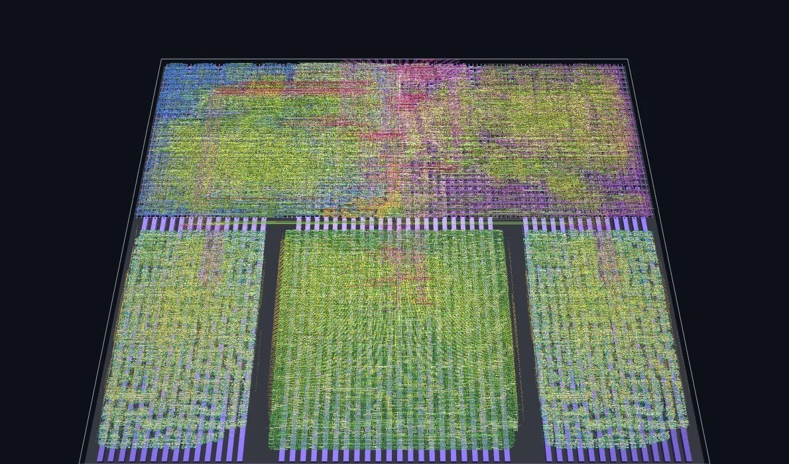
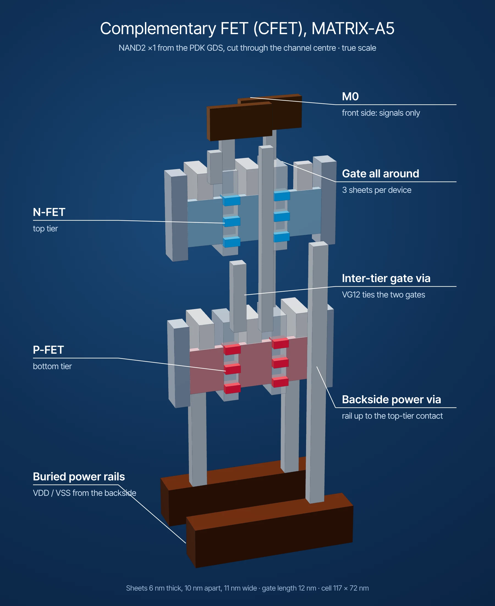
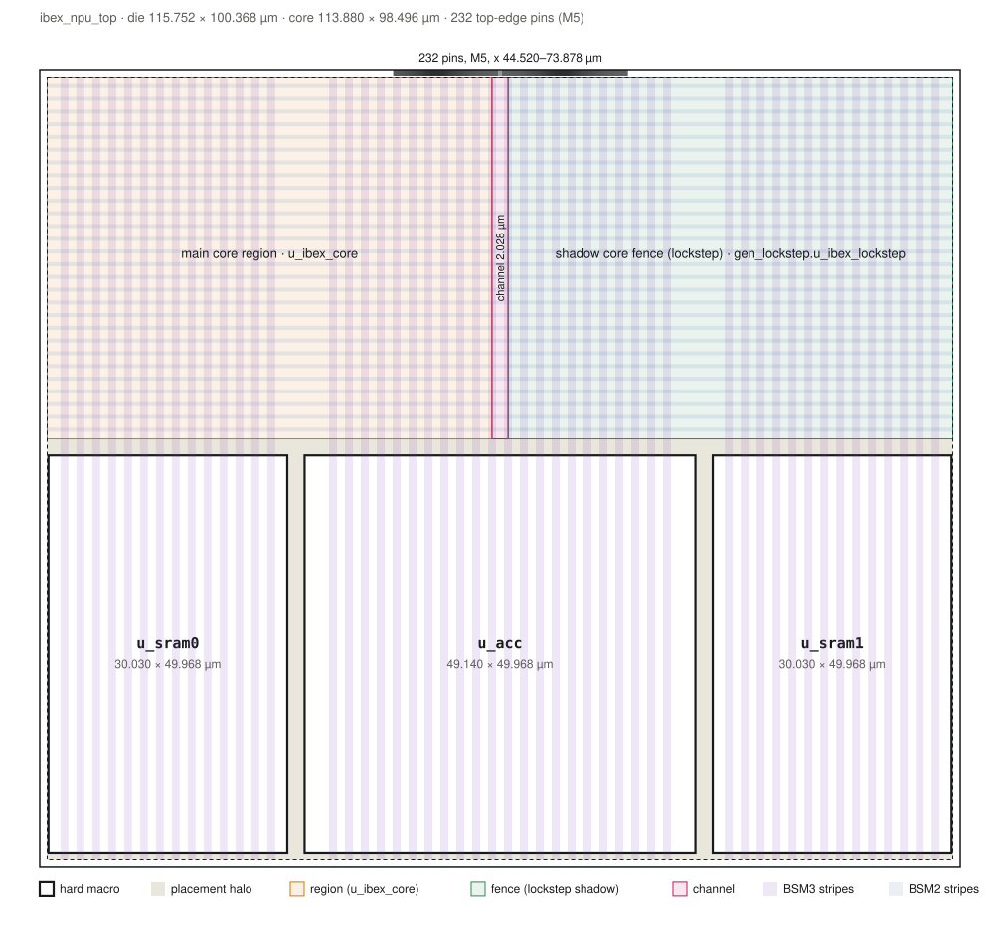
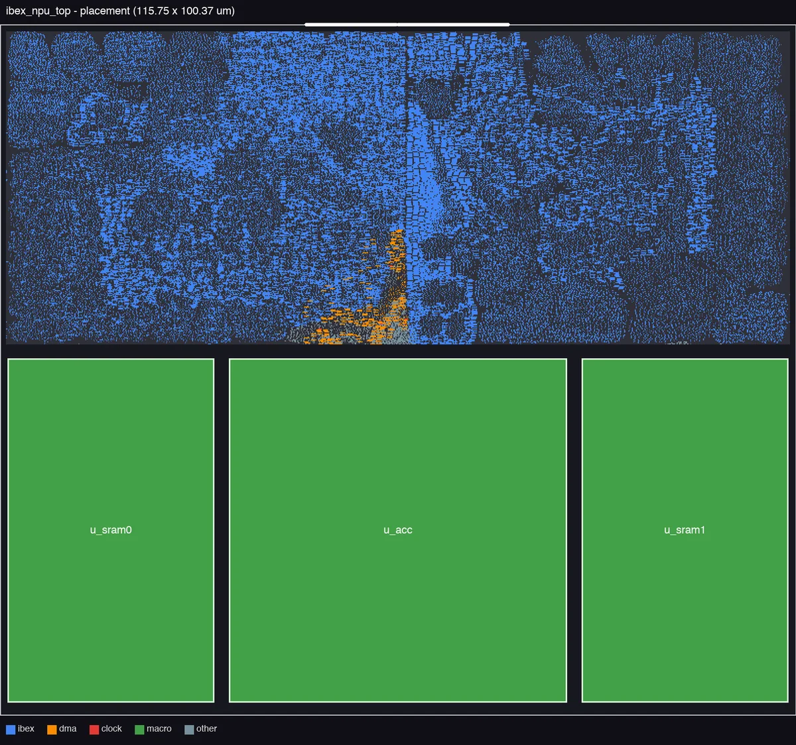
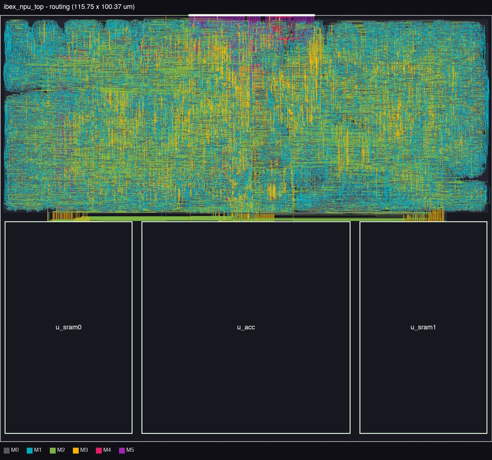
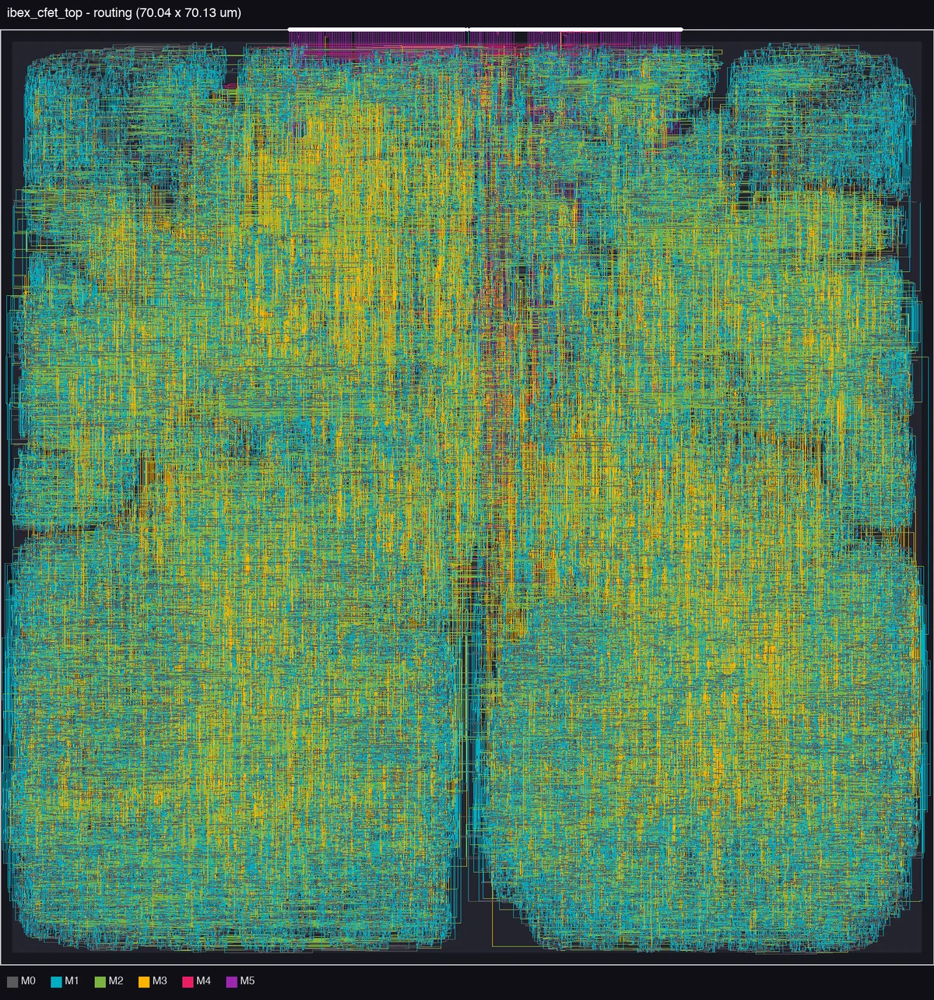
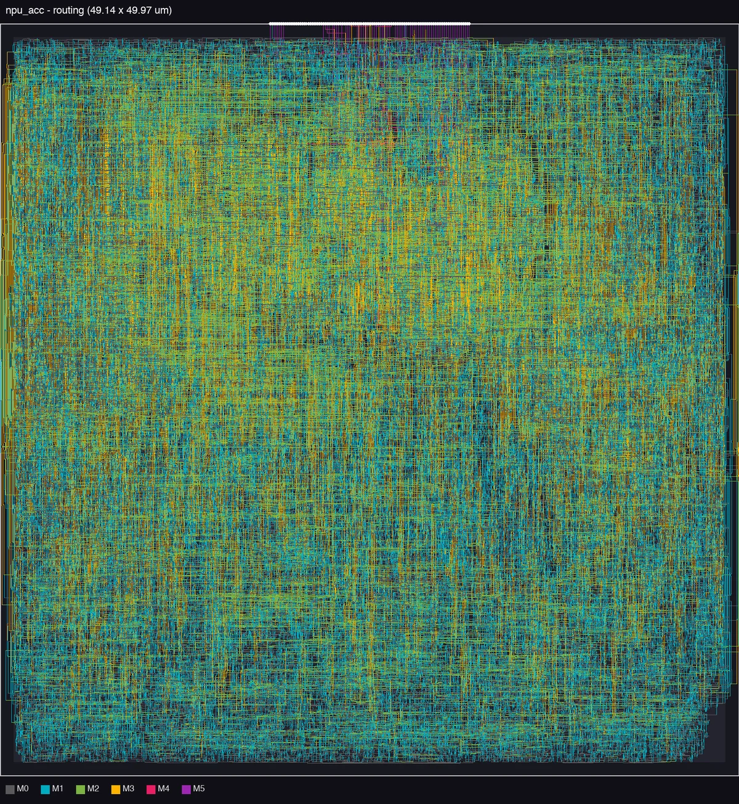
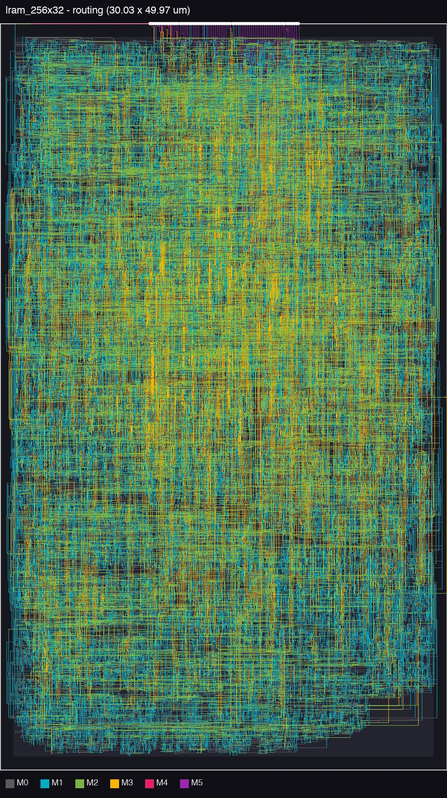

RISC-V · INT8 systolic array · CFET · Backside power · Hierarchical P&R · in progress
RISC-V + INT8 Systolic Array on a CFET PDK
A lowRISC Ibex RISC-V core with a memory-mapped 8×8 INT8 systolic-array accelerator, taken from RTL to GDS on MATRIX-A5, a research complementary-FET PDK with power delivered from the back of the wafer, using an industrial Cadence/Synopsys flow.
Two chips from the same CPU: Ibex alone as the accelerator-off baseline, and Ibex with the accelerator. The accelerator and its two 1 KB SRAMs are hardened as macros first: both pass LVS, Innovus DRC and post-P&R equivalence, and meet timing at 750 ps. The CPU-only top passes LVS and equivalence and meets 1.0 ns (setup +8 ps). The CPU+accelerator top is placed and routed; its signoff is not done yet.

Specs
OVERVIEW| Design | |
|---|---|
| CPU | lowRISC Ibex maxperf-pmp-bmfull: RV32IMCB, 3-stage, single-cycle multiplier, 16-region PMP, flip-flop register file, SecureIbex dual-core lockstep |
| Accelerator | npu_acc: 8×8 output-stationary INT8 systolic array, 32-bit accumulators, memory-mapped registers |
| Memory | 2× lram_256x32: 1 KB each (256×32, byte writes, 1-cycle read), built from standard-cell latches, hardened once and placed twice |
| DMA | npu_dma: tiled GEMM engine with a cycle counter; the CPU stalls on SRAM/accelerator accesses while it runs |
| Chips | ibex_cfet_top (baseline) · ibex_npu_top (CPU + accelerator) |
| Technology and flow | |
|---|---|
| PDK | MATRIX-A5 CFET, base variant, backside power delivery (research PDK) |
| Supply | 0.7 V |
| Cells | Site 0.039 × 0.072 µm · NAND2 x1 0.0084 µm² · DFF x1 0.062 µm² · 68 cells per Vt, svt / lvt / ulvt |
| Corners | Setup SSG −40 °C and 125 °C · hold FFG −40 °C and 125 °C · power TT 25 °C |
| Clock | 750 ps (macros) · 1.0 ns (CPU top) |
| Tools | Genus 25.1 (iSpatial) · Innovus 25.1 · Quantus · IC Validator V-2023.12 · Conformal 22.2 · Xcelium · Verilator |
The process: CFET with backside power
TECHNOLOGYA complementary FET stacks the nFET directly on top of the pFET instead of placing them side by side, shrinking the standard-cell footprint. MATRIX-A5 pairs this with backside power delivery: the supply comes up from the back of the wafer through a buried power rail (BPR) and backside metals BSM1–BSM3, and the front-side metals M0–M13 carry signals only.
The PDK is a research kit, not a production one. The cell library has only x1 flip-flops and no tie, tap, endcap, decap, clock-gating or scan cells, and several of its views needed work-arounds before signoff would run (below). At 0.7 V the slowest setup corner is the cold one: temperature inversion makes SSG −40 °C the worst case.

3D: from the whole chip to one transistor
GDS → 3Dibex_npu_top at true scale. Start on the whole die, then scroll toward any point, or use the buttons, to zoom about four orders of magnitude: the routed cell band, the rows and their buried power rails, a standard cell, and a single transistor with its three nanosheets.
This is the routed chip. Every wire (2.23 million rectangles on M0–M5), every placed cell (441,214, coloured by block: Ibex core blue, lockstep shadow purple, npu_dma orange, CTS red, the macros’ cells green, fillers dark) and every via (853,576) of ibex_npu_top, the macros included, comes from the GDS, converted by scripts/gds2web.py. Zoom in and the cells turn into their real layouts from the same GDS, with both transistor tiers and three nanosheets per device; heights come from the PDK.
The clock. The clock network was extracted from the layout geometry (metal and vias joined into nets) and traced from the clk_i pin through 2,505 buffers, inverters and clock gates, across 14 stages and into all three macros, to all 28,425 flip-flop and latch clock pins. Clock pulse sends a rising edge down that tree, stage by stage and along each wire. That is the order the edge travels, not a timing analysis, and it is slowed down by about ten billion times. Zoom into any clock-tree cell (Clock buffer, then Transistor) and its transistors switch as the edge reaches it: a switch-level simulation of that cell’s own transistor netlist, checked against the PDK. Nodes are red for 1, blue for 0 and grey where the value comes from data logic that is not simulated, and a channel lights up while it conducts. Cell geometry comes from the MATRIX-A5 PDK (MATRIX-PDK Academic and Non-Commercial License v1.0, © Georgia Institute of Technology), as modified for this chip.
Floorplan
IBEX_NPU_TOPThe three macros sit in a row along the bottom; the CPU and npu_dma fill the band above them. The main Ibex core and its lockstep shadow mirror each other about the die centre, with a 2 µm channel between them, and all 232 pins are on the top edge on M5. Standard cells use every second row only, because abutting rows short in the stock cell GDS.



The other three layouts



3D: the cells, nanosheet by nanosheet
GDS → 3DThe standard cells the whole chip is built from, extruded from the PDK’s cell GDS. Each transistor is three stacked nanosheets with the gate wrapped all the way round; the nFET tier sits directly on top of the pFET tier, and the supply comes up from the buried power rail underneath. Use the section plane to cut through the sheets, and the gate slider to see inside the gate.
True scale in all three axes. Drag to rotate, scroll to zoom, right-drag to pan.
Where each dimension comes from
| What | Value | PDK source |
|---|---|---|
| x, y of every shape | as drawn | Cell GDS gtA5_cfet_stdcells.gds; layer numbers from the LVS layer map |
| Which tier is which | ACT/GATE = pFET (bottom), ACT2/GATE2 = nFET (top) | LVS runset device definitions |
| Channel and source/drain | channel = ACT and GATE, not DUMMY, not GCUT; S/D = ACT not GATE | LVS runset (same derivations) |
| Sheets per device, thickness, gap | 3 × 6 nm, 10 nm apart | BSIM-CMG card ngaa, tgaa, tsus |
| Sheet width, gate length | 11 nm, 12 nm | Drawn ACT and GATE widths (match WGAA, L in the CDL) |
| Heights: BPR, both device tiers, contacts, vias, M0–M13 | BPR 5–37 nm, pFET slab 128–163 nm, nFET slab 246–281 nm, M0 324–348 nm | StarRC ITF, parsed layer by layer |
| Backside metals BSM1–3 and their vias | not drawn in cells | QRC ICT (used when rendering chip-level GDS) |
The PDK is not fully self-consistent here: the model card’s sheet stack (3×6 + 2×10 = 38 nm) is 3 nm taller than the ITF’s 35 nm ACT slab, so the outer sheets extend 1.5 nm past the source/drain block. Both are shown as the PDK gives them. Shapes are taken unclipped from the GDS, so the active strips stick out past the cell boundary (dashed) where they overlap the next cell. Geometry from the MATRIX-A5 PDK (M. Shon et al., IEEE JXCDC 2026, doi:10.1109/JXCDC.2026.3744406), MATRIX-PDK Academic and Non-Commercial License v1.0, © Georgia Institute of Technology.
System
ARCHITECTUREData accesses inside a 16 KB window at 0x1000_0000 go to npu_dma; everything else, including instruction fetch, goes to the external memory port. The window is split four ways.
| Offset | Region | Contents |
|---|---|---|
0x0000 | npu_acc | Accelerator registers |
0x1000 | SRAM0, 1 KB | A and B, row-major INT8, four values per word |
0x2000 | SRAM1, 1 KB | C, row-major INT32 |
0x3000 | DMA | CTRL, STATUS, DIMS (M/N/K in 8×8 tiles), ABASE, BBASE, CBASE, CYCLES |
One GEMM, tile by tile
Load
The CPU writes A and B into SRAM0, sets the tile counts and base addresses, and writes
CTRL.Copy a tile
For each tile (i, j, k) the DMA copies the 8×8 A and B tiles from SRAM0 into
npu_acc.Compute
The DMA starts the array and polls for done. Each processing element keeps its own 32-bit accumulator (output-stationary).
Write or accumulate C
The 64 results are written into SRAM1 for k = 0 and added to what is there for k > 0, so K can span several tiles.
Count
CYCLESholds the clock cycles of the last run. While the engine is busy, CPU accesses to the SRAMs and the array wait; the DMA registers and external memory stay reachable.
Flow
RTL → GDSLint and RTL simulation
Verilator lint; RTL testbenches for the array, the SRAM and the accelerator subsystem.
Synthesis (Genus, iSpatial)
One script per design. A post-synthesis script inserts tie-off generators, since the library has no tie cells.
Macros (Innovus)
lram_256x32andnpu_accare placed, routed and exported as LEF and timing models, with M3 access stubs for their pins.Top level (Innovus)
The top is synthesized with the macros as black boxes, then floorplanned, placed, clock-tree synthesized, routed and ECO’d with the macros beside the CPU.
Extraction and timing (Quantus)
Setup and hold checked on all four corners.
Physical verification (IC Validator)
LVS with a deck extended for the backside layers.
Equivalence (Conformal)
RTL against the post-P&R netlist for each design.
Gate-level simulation (Xcelium)
SDF-annotated smoke test of
ibex_npu_top.
Signoff on an immature PDK
PROBLEMS SOLVEDMost of the work was getting a research kit through an industrial signoff flow. Each fix below is scripted in the repository.
No tie cells
fix_ties*.pyConstant pins are driven from small reset-derived generators that a script inserts into the netlist after synthesis.
Abutted rows short
alt_rows.tclThe stock cell GDS shorts internal nets when rows abut, so standard cells are placed on alternate rows only.
LVS turns M4+ into ports
M3 and belowInternal nets are routed on M3 and below; only chip-port nets use M4/M5. Macro pins are M3 access stubs with an internal stack.
LVS stops at BPR
lvs_bsm.rsThe stock deck had no backside layers, so the supply network never joined. TSV, BSM1–3 and BSV1–2 were added to the deck.
svt-only GDS and CDL
make_vt_alias.pyThe PDK ships layout and netlist views for svt cells only; lvt and ulvt views are generated as aliases so all three Vts can be used and verified.
Hold with backside layers
front-side clockThe router was assigning clock nets to backside layers. A front-side clock route type and a hold-specific uncertainty closed hold.
Eight ECO rounds on the CPU top
pnr/eco/Rerouting a patched design broke earlier patches, so later rounds used reroute-free M0 patches until the top was LVS-clean.
Signoff status
RESULTS| Design | P&R | LVS | Innovus DRC | Timing | Post-P&R LEC |
|---|---|---|---|---|---|
lram_256x32 | done | PASS | clean | met, 750 ps | PASS |
npu_acc | done | PASS | clean | met, 750 ps | PASS |
ibex_cfet_top | done | PASS | clean | 1.0 ns: setup +8 ps, hold met, no max-tran/cap violations | PASS |
ibex_npu_top | routed | – | – | – | – |
LVS uses the stock deck with the backside layers added. Foundry DRC (IC Validator) has not been rerun on the final layouts.
Other measured points
Die sizes
from the DEFsibex_npu_top 115.75 × 100.37 µm · ibex_cfet_top 70.04 × 70.13 · npu_acc 49.14 × 49.97 · lram_256x32 30.03 × 49.97.
Accelerator subsystem
RTL simulation · pass16×16×16 GEMM in 2,040 DMA cycles; 8×16×24 GEMM (three accumulated K tiles) in 1,530 DMA cycles.
ibex_cfet_top synthesis
pre-P&R estimate, 1.0 ns~32k cells, 2,628 flip-flops, ~521 µm² cell area, ~3.6 mW.
Next
ROADMAPMacros and baseline
Done:
lram_256x32,npu_accandibex_cfet_topthrough P&R, LVS, DRC, timing and equivalence.CPU + accelerator top
Done: placed and routed. Next: LVS, DRC, timing and equivalence on
ibex_npu_top.Foundry DRC
Rerun IC Validator DRC on all final layouts.
Compare the two chips
Not measured yet: area overhead of the accelerator, GEMM speedup over software on the CPU, energy per matrix multiply, final post-route power, Fmax and CoreMark/MHz.